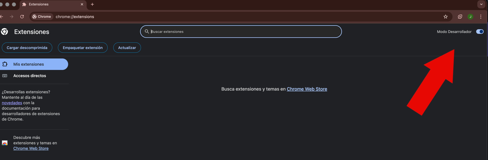
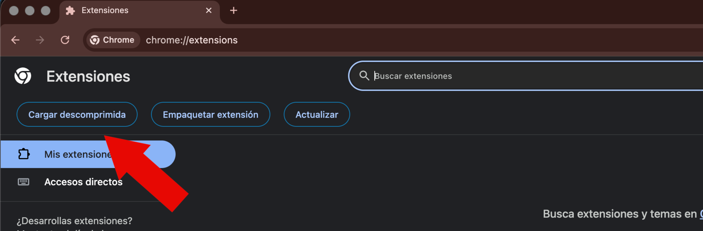
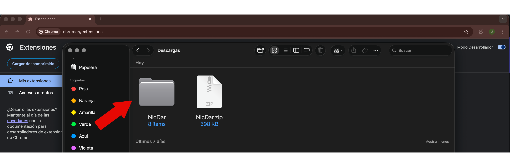
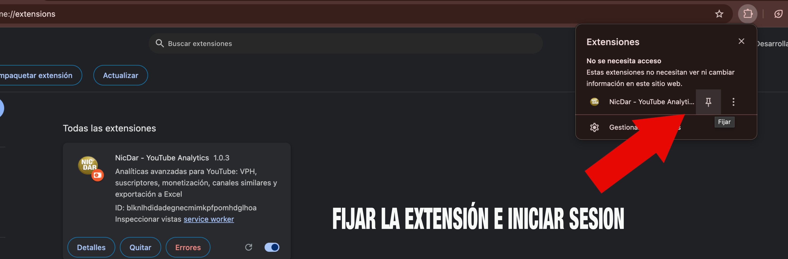

Tu descarga ha comenzado automáticamente. Sigue los pasos de abajo para instalarla en Chrome.
Si la descarga no ha comenzado, pulsa el botón:
Archivo ZIP · Compatible con Chrome y navegadores basados en Chromium
Solo tardas 2 minutos. No hace falta la Chrome Web Store.
Abre la carpeta de descargas y haz doble clic en NicDar.zip. Se creará una carpeta llamada NicDar.

En Chrome escribe chrome://extensions y pulsa Enter. Activa el interruptor "Modo Desarrollador" arriba a la derecha.

Pulsa el botón "Cargar descomprimida" y selecciona la carpeta NicDar que descomprimiste en el paso 1.

Haz clic en el icono de extensiones 🧩 en Chrome, busca NicDar y pulsa el pin para fijarla. Luego ábrela e inicia sesión con tu cuenta de Google.

Abre YouTube, haz una búsqueda y verás el botón Scan aparecer. ¡Empieza a encontrar nichos rentables!